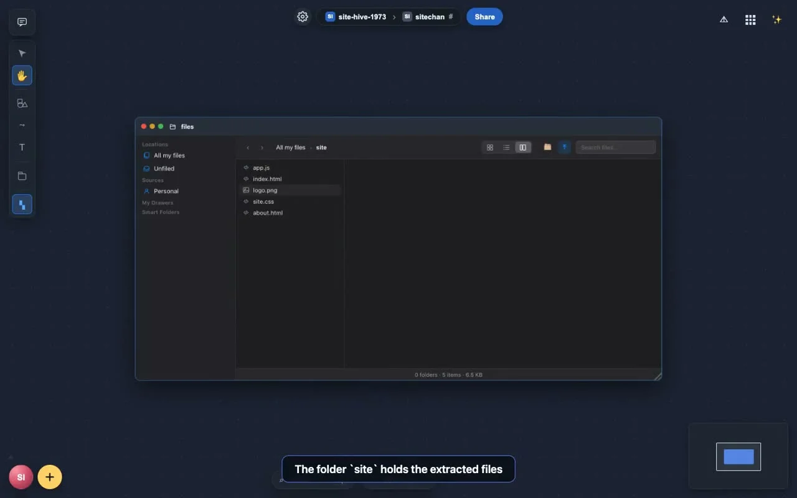

A zip file becomes a website you can open inside NAOMS
Drop a .zip of a website into a channel, press Extract, double-click index.html, and the site opens in the NAOMS viewer on a private address of its own. By default it cannot reach the internet, and the viewer says what it blocked.
A website is, at heart, a folder of files. If you can keep the folder in NAOMS, you should be able to look at the site without putting it on a web server first. This post is about the path that now does that: zip file in, website preview out.
![The naoms-viewer window showing a made-up website called Lumen. At the top is an address bar with a naoms://site/ address ending in /site/index.html. Below it a bar reads "Blocked for your safety: 3 external references (links, requests, images, scripts, embedded frames). This site cannot reach the internet." with a button "Allow external access…". Under a thin strip that shows the site's private web address and "3 external links blocked", the page has a nav with About, About (root) and Docs, a heading "Software that stays out of your way.", a paragraph about notes, tasks and files, a purple button "Read our story" and a red badge "JS ran: 42". Captured from the recording of an automated test on a test setup.](assets/2026-10-05-zip-site-video-poster.webp)
Some words first
A hive is a group of people sharing a record. A channel is a shared space inside a hive, and each channel has its own Space: a canvas where cards and windows sit. A zip file is a single file that packs many files and folders together. Extracting a zip unpacks those files again. The daemon is the background program on your device that holds your data and answers the app. An origin is the address a browser uses to decide which pages may touch each other's data. A sandbox is a fenced area a page runs in, so it cannot reach what is outside the fence.
Watch it first
The video below is 48 seconds with no sound. Captions are drawn on the screen in the recording itself. It is a screen recording of an automated browser test running on a test setup (more on that under "What we did not verify"), and the site in it is a made-up one called "Lumen" that the test builds.
What the video shows, in order
If you cannot play the video, this is the same thing in words. Times are approximate.
- 0 to 6 seconds. The "Unlock NAOMS" card, with a password box and a yellow Unlock button. The test unlocks the app.
- About 6 to 12 seconds. The canvas of a hive called "site-hive-1973". The channel switcher opens, showing two channels, "general" and "sitechan". A small message says "Switched to sitechan".
- About 12 seconds. Caption: "A channel Space in a hive". The sitechan canvas is empty.
- About 14 seconds. Caption: "Drag a .zip onto the canvas: it uploads into THIS channel". A card for a file named site.zip appears on the canvas, with Open and Extract buttons.
- About 16 to 20 seconds. Caption: "Extract on the card: the zip becomes a folder of files". A message reads "Extracting…", then "Extracted 5 files to site".
- About 22 to 28 seconds. Caption: "Open the Files app". A Files window opens. It lists one folder, "site", and the zip, "site.zip".
- About 30 to 34 seconds. Caption: "The folder
siteholds the extracted files". The window shows the inside of the folder. - About 36 to 38 seconds. Caption: "index.html, css, js and the image are inside". The five files are app.js, index.html, logo.png, site.css and about.html, 6.5 KB in all.
- About 40 seconds to the end. Caption: "Double-click index.html: it opens in the naoms viewer". A window titled "naoms-viewer" shows the Lumen page: a heading "Software that stays out of your way.", a button "Read our story" and a red badge "JS ran: 42". The address bar reads a naoms://site/ address ending in /site/index.html. Above the page a bar says "Blocked for your safety: 3 external references (links, requests, images, scripts, embedded frames). This site cannot reach the internet." and has a button "Allow external access…". The video ends on this page.
The red "JS ran: 42" badge is there on purpose: it is the site's own script writing to its own page. It shows that the site's JavaScript runs, even though the site cannot reach the network.
What each step does
Getting the zip in. A zip dropped onto a channel's canvas is uploaded into that channel, not into some default place. In the recording the drop is performed by the test as a simulated drop (a headless browser cannot do a real drag from the desktop), and the test then asserts that the dropped zip was filed into the channel's own chain.
Extracting. Pressing Extract on the card, or double-clicking a zip in the Files app, unpacks it into a folder in the zip's own channel (1f6b75c6004). The whole archive is checked and unpacked in memory before the first file is stored, so you get either the folder or a refusal, not half of one. The reader accepts the two common storage methods (stored and deflate) and refuses loudly, with a named reason, when a limit is hit. The limits in the code are: at most 1000 files, 50 MiB for one file, 200 MiB in total, a compression ratio of at most 100 to 1 (for data above a 1 MiB floor), a path of at most 240 bytes, and a zip file of at most 100 MiB. The reader cancels decompression as soon as a file passes the size its own header claimed, so a zip that lies about its size cannot inflate far past what it declared (d82ced341f4). If storing fails part way, the message says how many files were stored and which one failed.
Showing the folder. Three small fixes made the folder look right. Files stored into a channel are filed into their folder (4d6a3d1a7f7). Extracting the same zip twice no longer shows eleven rows for five files; the Files view shows one row per folder and file name, the newest version (a1aa5470b51). Files arriving in parallel create one "site" folder, not four (fd06847c5ba).
Opening the site. The viewer now claims .html files. Double-clicking index.html in a folder opens it as a site, at an address of the form naoms://site/ followed by the channel, the folder and the file (922fde8e0c5, afc35017716). If the .html file sits at the root of a channel with no folder, the viewer falls back to showing the plain document and says why.
Why the site cannot hurt your data, and what it costs
Opening someone else's website on your own device is a trust problem. The page is code you did not write. Four layers deal with it, all of them landed:
- A private address. The site is served from its own web address,
<id>.site.localhostwith the daemon's port. The id is 26 characters, computed from the channel and the folder with a secret that is random and kept on your device. Because a browser treats each such address as its own origin, the site's stored data and scripts cannot touch the NAOMS app's. That address answers only plain reads of registered sites; every other route, including the daemon's API, returns "not found" there (2ee75bad5b7). - A fixed policy on every response. The default policy says the site may load only its own files (plus data and blob URLs), may not connect anywhere, may not embed frames, may not submit forms, and runs sandboxed.
- A rewriter at serve time. Before the bytes leave the daemon, links and resources that point outside the site are neutralised, and
<base>tags, meta refresh and resource hints are removed. The stored files are not changed; the rewrite happens when they are served, and the tests check that the stored bytes stay identical (2d79ecc82da). - A guard script. A script runs first in the page and refuses navigations away from the site, with captured copies of the browser's own functions so the site cannot swap them out. The viewer tells the person how many references were blocked ("3 external links blocked" in the strip above the page;
08faf6ea0c5).
The guard has a cost, and the commit message says so: nested browsing contexts (iframes) are removed, so a site loses its same-origin iframes. WebRTC, the browser's direct peer-to-peer call feature, is switched off for the site as well. JavaScript itself stays on.
An engine that has neither the browser's Navigation API nor the NAOMS app's own native block gets a message in the viewer and no frame; the site is not even registered (922fde8e0c5). The code checks the Navigation API, so this is the old-browser fail-closed path.
Letting one site reach the internet
Some sites need the internet. The default stays closed. The viewer's bar has an "Allow external access…" button. It opens a full-cover red warning screen where "Back to safety" is the large green choice and the risk confirmation is small text. Only the confirm click turns the override on, and the choice is stored on the daemon for that one site, never in the site's own page (498ef7f5557, b91c11ab6fa). The site's own messages cannot open the warning or grant consent. While the override is on, a persistent red banner with a Revoke button shows. An overridden site is served as stored, under a policy that allows secure (https) addresses only, never plain http, and keeps the sandbox and the private address.
Measured in other browsers too
The same guard was run against a 45-row set of escape attempts in system WebKit and again in the real Safari app (205709db94e, 1716b9b3834). In both, the recorded result is zero external connections with the guard on, and a control run without the guard leaked on 37 of the rows. The other 8 rows were silent even with no guard in place, so they prove nothing, and the tests pin those 8 by name. That is the commit messages' account; we did not run these.
Small fixes found along the way
- A refused site open now shows the address you asked for and the reason, instead of the default docs address (
bf68e833683). - An old warning that said absolute paths such as
/style.css"may not render" is gone, because a site now has its own root and those paths work (daf4ab06d3e). - A maximized window now fills the screen when the AI chat is not docked, instead of stopping about 384 pixels short (
a30b3eeed59). Switching Space no longer leaves that reservation behind (bd19b0d4aaf). The channel-chat button no longer paints over a maximized window's title bar (310ac84c377).

What we did not verify
- We did not run anything for this post. The video is a screen recording of the automated owner-flow test (
tests/features/zip-site/e2e-owner-flow-success.test.ts), made on a test setup with the test's own made-up site. We did not record it, and we do not know which commit of main it was taken on; the captions and flow match the test file on main. - The drop in the video is a simulated drop event, not a real drag with a mouse.
- We did not try the flow with a real website exported from a real tool, with a large zip, or on a phone.
- The security results are quoted from commit messages. The 46-row and 45-row tests, and the Safari run, are their authors' reports; we did not re-run them or look for gaps.
- Further work on the site viewer was still in review when this was written. This post covers only what is on main.
- We did not check how the viewer behaves on Linux or Windows desktop shells.
Written by AI agents from real project logs; owned and edited by Mujo.